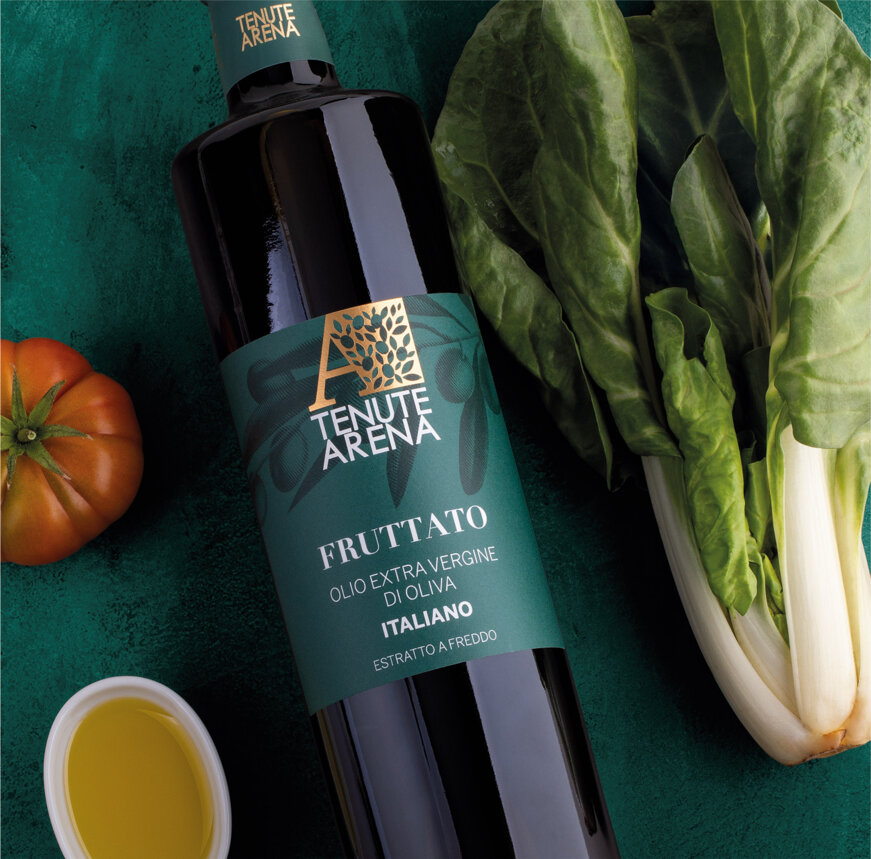
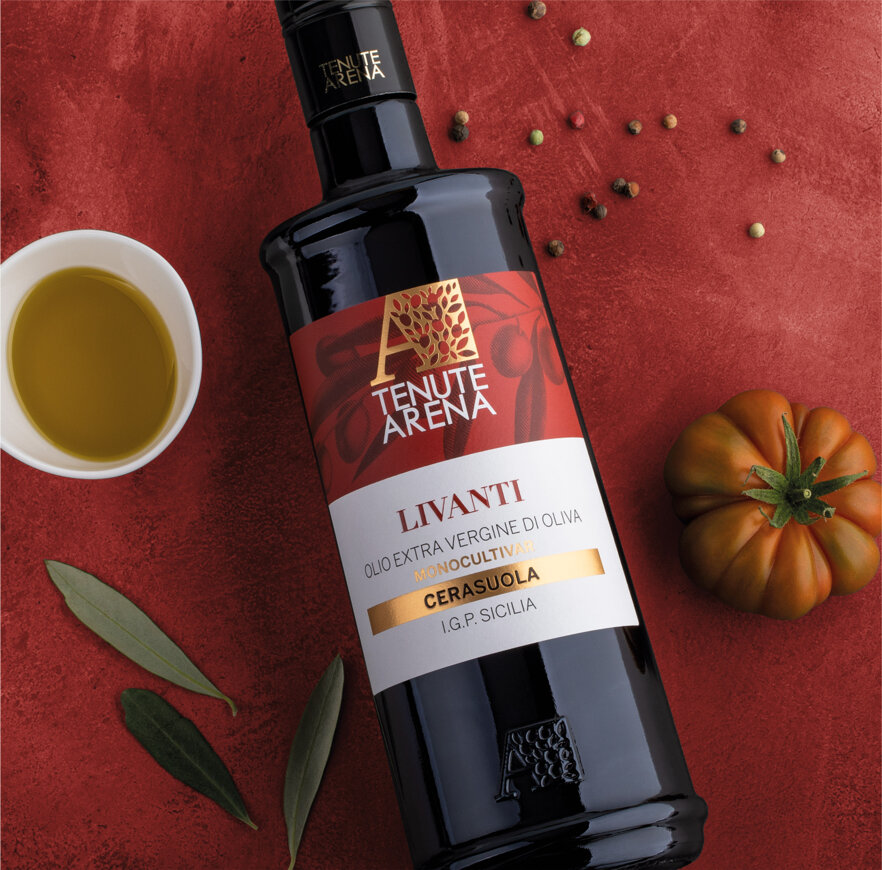
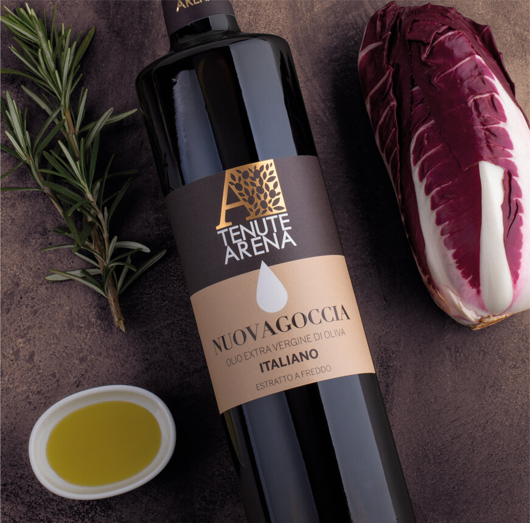
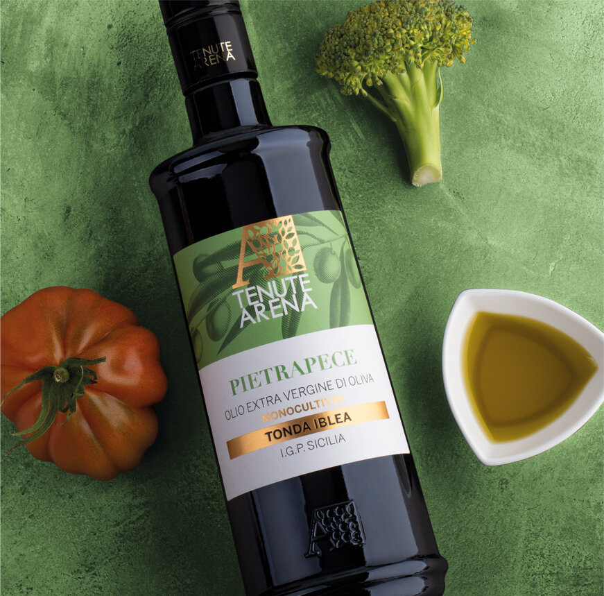
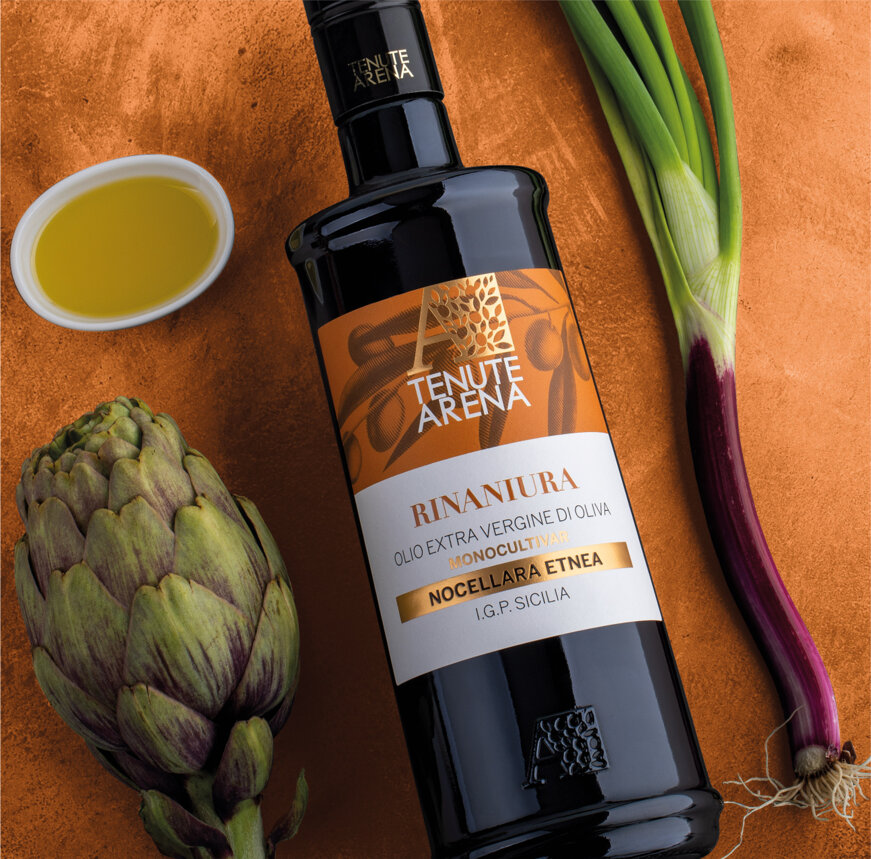
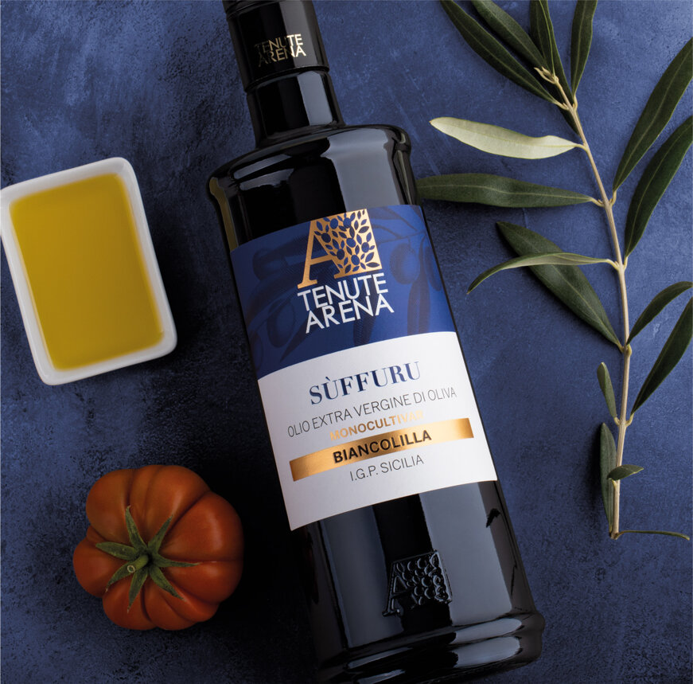
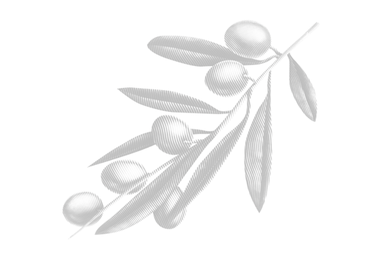
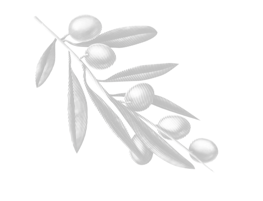
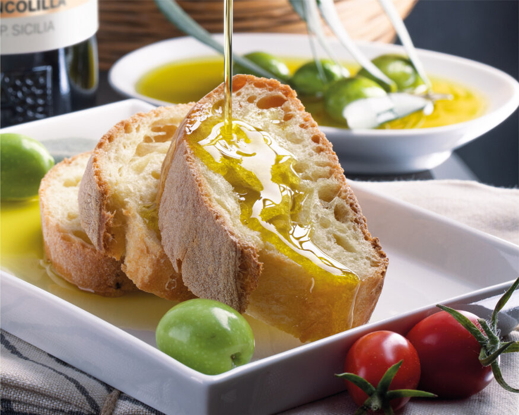

CONTATTI
Spedizione gratuita per ordini superiori a € 70

CONTATTI
SHOP ONLINE
SHOP ONLINE
INFORMAZIONI
Tenuta Arena S.S.Agricola Sp4 km 13,5 94015 Piazza Armerina
0935 959638
0935 1976468
info@tenutaarena.com
Tenuta Arena S.S.Agricola Sp4 km 13,5 94015 Piazza Armerina
0935 959638
0935 1976468
info@tenutaarena.com
Tenuta Arena è l’espressione della sensibilità e dell’entusiasmo di una nuova generazione che continua la tradizione di famiglia iniziata nel 1966, da sempre distinta per la passione nella coltivazione dell’ulivo e l’amore per i sapori di una volta, e che ogni anno in autunno rinnova la magia dell’olio.
Tenuta Arena è l’espressione della sensibilità e dell’entusiasmo di una nuova generazione che continua la tradizione di famiglia iniziata nel 1966, da sempre distinta per la passione nella coltivazione dell’ulivo e l’amore per i sapori di una volta, e che ogni anno in autunno rinnova la magia dell’olio.
Linea Olio d'eccellenza a casa tua

www.tenutaarena.com @ All Right Reserved 2026 | Sito web realizzato da Flazio Experience
www.tenutaarena.com @ All Right Reserved 2026 | Sito web realizzato da Flazio Experience


Consegna in 24/48 ore IN TUTTA ITALIA - Spedizione gratuita per ordini superiori a € 70.
Consegna in 24/48 ore IN TUTTA ITALIA - Spedizione gratuita per ordini superiori a € 70.
Seleziona una linea
Trinakrion
EXTRA VERGINE DI OLIVA ITALIANO - BIOLOGICO | I.G.P. SICILIA
Trinakrion non è solo un olio, ma un'esperienza sensoriale che trasporta chi lo assaggia in un mondo di tradizione e passione. Un filo su una bruschetta, un'insalata o un piatto di pasta diventa una poesia, un omaggio alla generosità della terra siciliana e al lavoro instancabile dei suoi abitanti.


I NOSTRI MONOCULTIVAR
Le olive che crescono in un preciso territorio possono essere colte e lavorate in modo da conservare le caratteristiche del terroir e della loro varietà. Questo processo è ciò che dà vita agli oli monocultivar, che rappresentano una perfetta sintesi tra territorio e varietà del frutto. L'olio monocultivar offre una completa immersione nei sapori e nei profumi della terra di provenienza delle olive.
Un vero e proprio tesoro dell'agricoltura, che rappresenta l'espressione più pura delle qualità del territorio. Gli esperti assaggiatori sanno apprezzare la complessità di questi oli, che regalano sensazioni gustative intense e durature, caratteristiche che solo un prodotto di alta qualità può offrire.
Suffuru
EXTRA VERGINE DI OLIVA ITALIANO MONOCULTIVAR - BIANCOLILLA | I.G.P. SICILIA
All’olfatto ha un fruttato medio, con evidenti sentori di foglie, erba e pomodoro. Al gusto è poco amaro e moderatamente piccante conferendo all’olio l’appellativo di dolce. Abbinamento con pesce marinato, zuppe di pesce, carpaccio e tartare di pesce, seppie alla griglia, pinzimonio per arrosti di pesce e verdure crude e con tutti i piatti dal gusto delicato e raffinato.
Pietrapece
EXTRA VERGINE DI OLIVA ITALIANO MONOCULTIVAR - TONDA IBLEA | I.G.P. SICILIA
All’olfatto ha fruttato intenso con sentori di pomodoro verde e di foglia di pomodoro. Al gusto è in equilibrio nei descrittori di amaro e piccante con una persistenza avvolgente tutto il palato. Consigliato con zuppe e insalate, bruschette o capresi, a crudo sui vegetali e gli ortaggi grigliati, insalate di pomodori, patate, formaggi freschi e di media stagionatura.
Rinaniura
EXTRA VERGINE DI OLIVA ITALIANO MONOCULTIVAR - NOCELLARA ETNEA | I.G.P. SICILIA
All’olfatto presenta un fruttato medio, con sentori di erba e carciofo. Al gusto le note di amaro sono leggermente superiori al piccante e comunque abbastanza equilibrate. Consigliato con verdure grigliate, patate al forno, vellutate, zuppe a base di funghi, minestre e zuppe di cereali, macco di fave, minestroni di verdure, formaggi freschi e caprini, tartufo, pinzimonio.
Livanti
EXTRA VERGINE DI OLIVA ITALIANO MONOCULTIVAR - CERASUOLA | I.G.P. SICILIA
All’olfatto il fruttato che caratterizza questa varietà è l’intenso, con sentori di pomodoro più o meno maturo oltre che di foglia verde. Al gusto prevale il descrittore amaro sul piccante in maniera decisa, meritandosi l’appellativo di olio abbastanza amaro. Tuttavia, nel complesso le note di amaro sono molto mitigate dai sentori di frutti maturi associati ad una gradevole persistenza.
Selezione Italia
Da noi la passione per il territorio e la qualità si uniscono alla produzione di oli con olive italiane, provenienti da diverse regioni del nostro Paese, tra cui la Sicilia, ma non solo. L'olio extravergine d'oliva è un prodotto di eccellenza della nostra tradizione culinaria, e la sua produzione richiede grande attenzione e cura in ogni fase del processo. Nel nostro frantoio, utilizziamo solo olive di alta qualità, selezionate per garantire il massimo sapore e le migliori proprietà organolettiche. I nostri oli realizzati con una selezione di olive italiane sono caratterizzati da sapori intensi e fruttati. Ogni bottiglia racchiude la passione per il nostro territorio e per la qualità, offrendo un'esperienza sensoriale unica.
'Mmaculatu
EXTRA VERGINE DI OLIVA BIOLOGICO | 100% ITALIANO
All’olfatto si presenta con un fruttato medio-leggero con sentori di erba e di mandorla.
Al gusto i descrittori di amaro e piccante sono in equilibrio denotando una leggera persistenza in bocca. Si abbina perfettamente con pesce marinato, zuppe di pesce, carpaccio e tartare di pesce, seppie alla griglia, pinzimonio per arrosti di pesce e verdure crude. Inoltre, conferisce un sapore delicato e raffinato a tutti i piatti a base di pesce e frutti di mare.
Fruttato
EXTRA VERGINE DI OLIVA ITALIANO ESTRATTO A FREDDO
All'olfatto possiede un aroma medio-leggero caratterizzato da sentori di erba appena tagliata e
pomodoro fresco. Al gusto, l'amaro e il piccante sono in equilibrio, con una leggera persistenza in bocca. Il suo carattere fruttato e versatile lo rende adatto a piatti di carne, ma anche a crudo sul pane e per accompagnare formaggi.
Fruttato Latta
OLIO EVO FRUTTATO 100% ITALIANO
All'olfatto possiede un aroma medio-leggero caratterizzato da sentori di erba appena tagliata e
pomodoro fresco. Al gusto, l'amaro e il piccante sono in equilibrio, con una leggera persistenza in bocca. Il suo carattere fruttato e versatile lo rende adatto a piatti di carne, ma anche a crudo sul pane e per accompagnare formaggi
Nuova Goccia
EXTRA VERGINE DI OLIVA ITALIANO ESTRATTO A FREDDO
All’olfatto si distingue per il suo caratteristico fruttato, intenso e deciso, con sentori di erba fresca, verzure e rosmarino. Al gusto l’amaro e il piccante sono accentuati con un carattere deciso e corposo. La sua leggera acidità e una delicata persistenza in bocca, lo rende adatto ad arricchire i sapori di piatti crudi o delicati, come insalate, verdure e carpacci, ma è ottimo anche sul pane abbrustolito, sulle bruschette e sugli arrosti.
Nuova Goccia Latta
OLIO EVO NUOVAGOCCIA 100% ITALIANO
All'olfatto possiede un aroma medio-leggero caratterizzato da sentori di erba appena tagliata e
pomodoro fresco. Al gusto, l'amaro e il piccante sono in equilibrio, con una leggera persistenza in bocca. Il suo carattere fruttato e versatile lo rende adatto a piatti di carne, ma anche a crudo sul pane e per accompagnare formaggi

Iscriviti alla Newsletter
Lascia la tua mail per ricevere informaizoni sui nuovi prodotti, le ricette e le promozioni del sito web